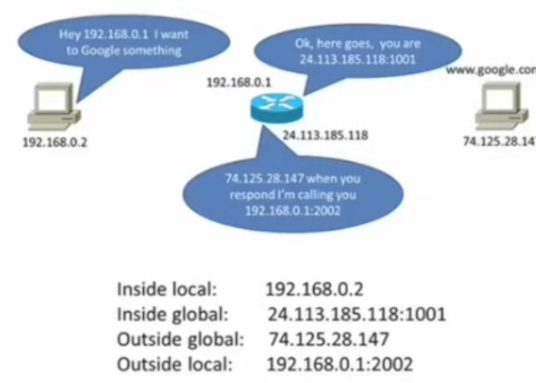

The purpose of network address translation.
Network address translation (NAT) solves the problem of how to route non-routable IP addresses.
As a partial effort to conserve the IPv4 address space, the private IPv4 addressing spaces were developed. These address spaces were removed from the public IPv4 address spaces and made non-routable across public IPv4 networks.
Being non-routable prevents the private IPv4 addresses from communicating with remote public networks. NAT very simply solves this problem. A router with NAT enabled will translate a private IP address into a routable public IP address. When the response returns to the router, it passes the response back to the device that requested it.
How network address translation works.
The two categories of NAT.
- Static NAT (SNAT): each private IP address is assigned to a specific routable public IP address. This relationship is kept and maintained by the NAT enabled router.
- When a device needs access outside of the local network, the router translates the local IP address to the assigned public IP address. When the response comes back, the router will translate the public IP address back into the local one.
- SNAT is not flexible and leads to scalability(扩展性) issues. An individual routable IP address must be kept for every device that requires to access outside of the local network.
- Dynamic NAT (DNAT): the NAT enabled router dynamically assigns a routable IP address to devices from a pool of available public IP addresses.
- When a device needs access outside of the local network, the router performs the NAT function, only the public IP address comes from a re-useable pool of public IP addresses.
- As initially designed, DNAT was more flexible than SNAT, but still led to some scalability issues. As more network traffic requires access to remote networks, the pool of available public IP addresses needs to increase or outside access cannot be achieved.
Port address translation (PAT).
- PAT is a type of DNAT that was developed to increase the scalability of NAT.
- When a local network device requires access to a public network, the NAT enabled router dynamically assigns the public IP address to the device with the addition of dynamically assigning a port number to the end of the public IP address.
- The router tracks the IP addresses and port numbers to ensure that network traffic is routed to and from the proper devices.
- PAT still requires a pool of public IP addresses, but the pool may only contain one address or it may contain several for a large private network.
- This is the preferred method of implementing NAT for two reasons: less public IP addresses are required and it is also easier for administrators to maintain.
The NAT terminology(术语).
- Inside local address: a private IP address on the local network.
- The private IP address assigned to a specific device.
- Inside global address: a public IP address referencing an inside device.
- The public IP address assigned to the inside device by the NAT enabled router to allow access outside of the network.
- Outside global address: a public IP address referencing an outside device.
- The public IP address assigned to a device outside of the local network.
- Outside local address: a private IP address assigned to an outside device.
- The private IP address assigned to an outside device on the interior of the local network.
